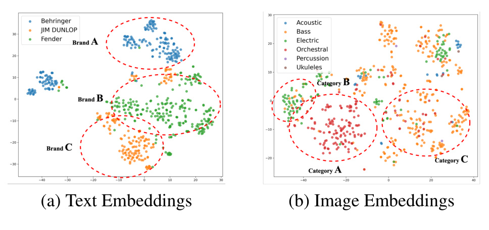
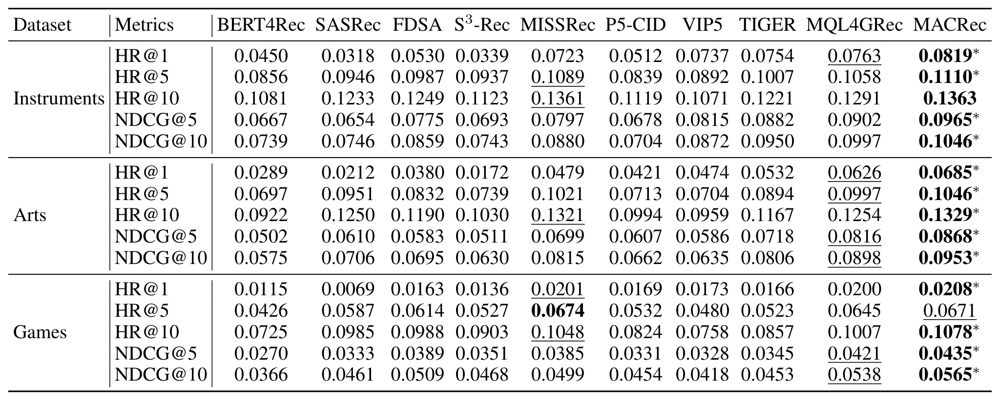
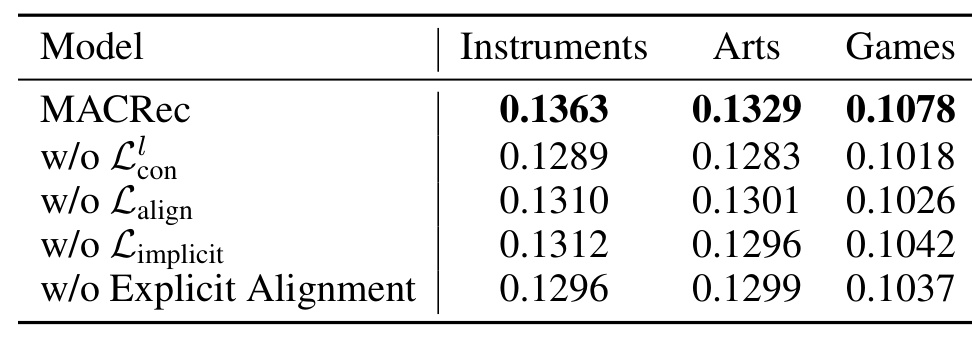
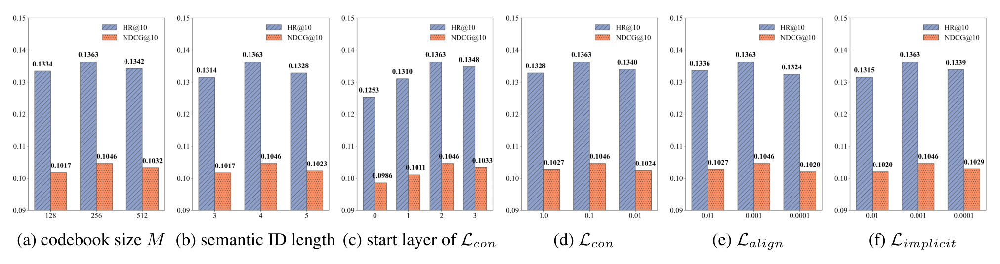
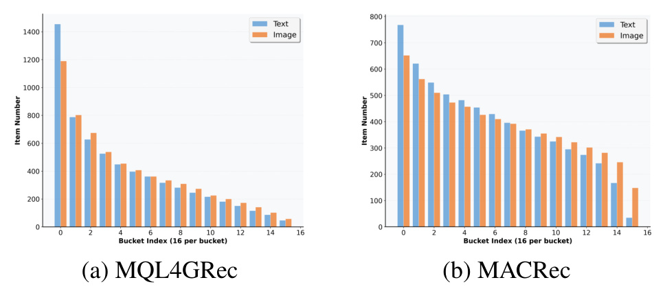
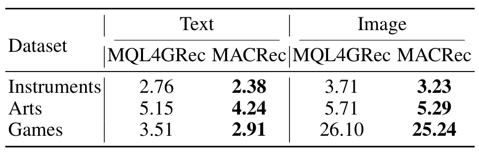

MACRec：面向生成式推荐的多方面跨模态量化
基本信息
| 字段 | 内容 |
|---|---|
| 英文标题 | Multi-Aspect Cross-modal Quantization for Generative Recommendation |
| 中文标题 | MACRec：面向生成式推荐的多方面跨模态量化 |
| 作者 | Fuwei Zhang, Xiaoyu Liu, Dongbo Xi, Jishen Yin, Huan Chen, Peng Yan, Fuzhen Zhuang, Zhao Zhang |
| 机构 | Beihang University；Meituan；SKLCCSE, School of Computer Science and Engineering, Beihang University |
| 来源 | arXiv；AAAI 2026 |
| 日期 | 2025-11-22 arXiv v2 |
| 论文入口 | arXiv:2511.15122 |
| 代码/项目 | GitHub: zhangfw123/MACRec |
| 本地 PDF | 北航-MACRec.pdf |
| 历史重复 | 未发现已有完整 MACRec 本地笔记或主页页面；此前只在 SynGR 笔记中作为相关工作出现 |
一句话结论
MACRec 解决的是多模态生成式推荐中“item ID 质量”和“生成模型是否真的理解多模态 ID”这两个相连问题。它先在 RQ-VAE 量化阶段引入跨模态伪标签和逐层对比学习，让文本与图像的 residual quantization 相互补充，降低 semantic ID 碰撞；再在生成式推荐训练阶段加入隐式表示对齐和显式跨模态生成任务，让 T5 不只是分别生成文本 ID 或视觉 ID，而是学习同一 item 的两套语义标识之间如何对应。实验上，MACRec 在 Instruments、Arts、Games 三个 Amazon 数据集上整体优于 MQL4GRec、TIGER、MISSRec 等 baseline，尤其说明“跨模态交互要进入量化过程本身”，不能只靠后面的拼接或 ensemble。
背景与问题
生成式推荐把推荐问题改成 next-token prediction：先把每个 item 变成离散 semantic ID，再把用户历史写成 ID 序列，最后让 seq2seq 或自回归模型生成下一个 item 的 ID。TIGER 这类方法证明了这种范式可以绕开传统 item embedding 打分，把检索空间压缩到 token 空间。但它也带来一个新瓶颈：如果 semantic ID 本身不稳定、有碰撞或缺少层级语义，生成模型再强也只能在坏的离散空间里搜索。
早期生成式推荐多依赖文本 embedding。文本标题、品牌、类目和描述确实高语义密度，但也容易把 item 拉向同一个品牌或关键词簇。例如同一品牌下的不同乐器，标题里都含有类似品牌名或配件描述，文本 embedding 会更强调这些共性；图像则更容易看到外观形态、颜色、结构和乐器类别。只用文本量化，ID 可能在“同品牌但不同功能”的商品之间混淆；只用图像量化，又可能忽略品牌、规格、适用场景等文本线索。

图 1 是 MACRec 的动机证据。左侧文本 embedding 在 Instruments 数据上更容易按 Behringer、JJM DUNLOP、Fender 等品牌聚类；右侧图像 embedding 更容易按 acoustic、bass、electric、orchestral、percussion、ukuleles 等乐器类别分开。论文由此提出：文本和图像不是简单冗余关系，而是分别捕捉 item 的不同方面。问题不在于有没有把图像接入模型，而在于量化时是否让这两种信息发生交互。
现有多模态生成式推荐有两类常见做法。第一类是把不同模态 embedding 拼接后量化，但不同模态维度、尺度和噪声差异会让量化偏向某一模态；第二类是为文本和图像分别学习 semantic ID，后续再让生成模型分别生成并 ensemble，但这会把互补信息留到很晚才融合，量化 codebook 本身没有被跨模态信息校正。MACRec 的判断是：semantic ID 的构造阶段就应该引入 cross-modal interaction，否则深层 residual quantization 很容易出现 semantic loss、codebook collapse 和 item collision。
这篇论文和 MQL4GRec 的关系很直接。MQL4GRec 把文本和图像转成统一 quantitative language，并用多种生成任务迁移知识；MACRec 在它之后进一步强调 ID learning 阶段的跨模态量化质量。换句话说，MQL4GRec 更像“把多模态内容翻译成一个可生成的语言”，MACRec 则问“这个语言的词表和 token 分配能不能通过跨模态量化学得更好”。
核心方法
MACRec 的整体框架可以分成两段：左侧是 Cross-modal Item Quantization，用文本和图像共同学习高质量 semantic ID；右侧是 Generative Recommendation with Multi-aspect Alignment，用隐式和显式对齐训练生成模型理解两套 ID 的对应关系。

图 2 的左半部分说明量化阶段不是两条孤立管线。文本 embedding 和图像 embedding 先分别聚类生成伪标签，然后在 RQ-VAE 每一层 residual quantization 里互为监督信号：视觉伪标签用来优化文本 residual，文本伪标签用来优化视觉 residual。右半部分说明训练阶段不仅有常规 Seq2Seq 推荐任务，还有 latent space 的隐式对齐和 token generation 的显式对齐。这样设计的目的，是让 item ID 的学习和生成模型训练都受到跨模态一致性约束。
1. 双模态伪标签：先给跨模态对比学习造正样本
给定 item $i$，论文用 LLaMA 等文本编码器得到文本 embedding $t_i$，用 ViT 得到图像 embedding $v_i$。然后对两种模态分别做 K-means：
这里的 $C_{\mathrm{text}}$ 和 $C_{\mathrm{vision}}$ 是伪标签。它们不是最终推荐标签，而是用来定义“在另一模态视角下相似”的正样本。例如两个 item 的视觉伪标签相同，就可以在文本 residual 空间里作为正样本，迫使文本量化考虑视觉相似性；反过来，文本伪标签相同也可以校正视觉 residual。这个设计比简单把同一个 item 的文本和图像拉近更细，因为它把跨模态信息注入到 batch 内多个 item 的局部结构里。
2. 跨模态残差量化：在每层 codebook 上做互补校正
MACRec 仍以 RQ-VAE 为基础。文本和图像先经过各自的 MLP encoder 得到 latent representation：
第 $l$ 层的文本和视觉 codebook 分别记为 $C_l^t=\{e_{l,k}^t\}_{k=1}^M$、$C_l^v=\{e_{l,k}^v\}_{k=1}^M$。对 residual $r_l^t$ 和 $r_l^v$，选择最近 codeword：
随后更新 residual：
普通 RQ-VAE 在这里会让文本和图像各走各的。MACRec 在每一层加入 InfoNCE 式跨模态对比损失。视觉到文本方向使用视觉伪标签挑选文本 residual 的正样本：
文本到视觉方向类似：
最终第 $l$ 层对比项为：
这一步是 MACRec 的核心。它不是把两种模态强行压成同一个向量，而是让文本 residual 在视觉相似结构下更可分，让视觉 residual 在文本相似结构下更可分。特别是在深层 RQ-VAE 中，前几层已经解释掉粗粒度语义，后几层 residual 更容易变成噪声；跨模态伪标签可以为这些 residual 提供额外语义锚点。
3. 跨模态重构对齐：让量化表示本身互相可对齐
对 $L$ 层 codebook 求和得到量化表示：
MACRec 再用双向对比学习对齐同一 item 的文本量化表示和视觉量化表示：
与此同时，文本和图像分别重构原始 embedding，并保留 RQ-VAE 的 reconstruction loss 与 codebook loss：
最终 ID 学习目标为：
论文还沿用 MQL4GRec 的冲突解决思路：当多个 item 被分配到同一 semantic ID 时，按 residual 到 codeword 的距离重新分配 codeword，尽量减少 item ID collision。
4. 生成模型的隐式对齐：让同一 item 的两套 ID 在 latent space 靠近
训练生成式推荐模型时，MACRec 为同一个 item 保留文本 semantic ID 和视觉 semantic ID。例如文本 ID 可以写成 $\langle a_1\rangle\langle b_2\rangle\langle c_3\rangle$，视觉 ID 可以写成 $\langle A_1\rangle\langle B_2\rangle\langle C_3\rangle$。模型 backbone 是 T5 encoder-decoder。对同一个 item 的两套 ID，先经过 T5 encoder，再 mean pooling：
随后做双向 InfoNCE 对齐：
这一步解决的是生成模型内部表示问题：即使 item tokenizer 已经学到两套 ID，T5 也未必知道 $\langle a_1\rangle\langle b_2\rangle\langle c_3\rangle$ 和 $\langle A_1\rangle\langle B_2\rangle\langle C_3\rangle$ 是同一个 item 的不同模态视图。隐式对齐把这种对应关系写进 encoder 表示空间。
5. 显式对齐：用跨模态生成任务训练 token 对应关系
隐式对齐只在 representation level 约束，MACRec 还设计显式生成任务。item-level 对齐让文本 semantic ID 生成视觉 semantic ID，视觉 semantic ID 生成文本 semantic ID；sequence-level 对齐让一段文本 semantic ID 历史预测下一个 item 的视觉 semantic ID，或让视觉历史预测下一个 item 的文本 semantic ID。
最终推荐训练仍是 seq2seq negative log-likelihood，并加上隐式对齐项：
推理时，模型分别对文本语义 ID 和视觉语义 ID 使用 constrained beam search 生成候选，再把两种模态的分数平均 ensemble 得到最终推荐结果。也就是说，MACRec 的在线推理仍然是生成候选 ID，只是候选来自两套更强的 semantic ID 和一个学过跨模态对齐的生成模型。
实验与结果
论文使用 Amazon Product Reviews 的三个类目：Musical Instruments、Arts, Crafts and Sewing、Video Games。规模分别是 17,112/22,171/42,259 个用户，6,250/9,416/13,839 个 item，136,226/174,079/373,514 条交互，平均序列长度 7.96/7.85/8.84，稀疏度都超过 99.8%。评估采用 leave-one-out，并在全量 item collection 上 full ranking；指标是 HR@1/5/10 和 NDCG@5/10。
baseline 覆盖传统序列推荐、内容增强推荐和生成式推荐：BERT4Rec、SASRec、FDSA、S3-Rec、MISSRec、P5-CID、VIP5、TIGER、MQL4GRec 等。实现上，文本特征来自 LLaMA，图像特征来自 ViT-L/14；RQ-VAE codebook size 为 256，量化 4 层；T5 encoder 和 decoder 都是 4 层、6 个 attention heads、hidden dimension 64；batch size 1024，学习率 0.001，结果取 5 个 random seeds 平均。

表 2 是主结果。MACRec 在三个数据集的多数指标上最优。相对 MQL4GRec，Instruments 的 HR@10 从 0.1291 提升到 0.1363，NDCG@10 从 0.0997 提升到 0.1046；Arts 的 HR@10 从 0.1254 提升到 0.1329，NDCG@10 从 0.0898 提升到 0.0953；Games 的 HR@10 从 0.1007 提升到 0.1078，NDCG@10 从 0.0538 提升到 0.0565。结果说明，在同样使用多模态离散 token 的路线里，改进 quantization 和 alignment 仍然带来稳定收益。
主结果还显示一个细节：传统多模态 sequential baseline MISSRec 在一些指标上很强，例如 Games HR@5 达到 0.0674，但 MACRec 在 NDCG@10 与 HR@10 上更稳。这说明生成式推荐的优势不只是 Top-K 命中，而是把目标 item semantic ID 排在更靠前位置；跨模态量化改善的是生成空间里的排序质量。

表 3 直接回答各模块是否必要。去掉逐层跨模态对比 $\mathcal{L}_{\mathrm{con}}^l$ 后，Instruments HR@10 从 0.1363 降到 0.1289，是最大跌幅；去掉重构对齐 $\mathcal{L}_{\mathrm{align}}$、隐式对齐 $\mathcal{L}_{\mathrm{implicit}}$ 或显式 alignment 也都会下降。这个结果支持论文的核心判断：最关键的改动发生在 ID learning 阶段，尤其是让 residual quantization 逐层感知另一模态的伪标签结构。

图 3 展示了复现时最需要关注的超参数。codebook size 太小会限制表示空间，太大会稀释 token 出现频次；semantic ID 太短承载不了足够语义，太长又扩大生成空间；$\mathcal{L}_{\mathrm{con}}^l$ 从第 3 层开始效果最好，因为前几层更适合保留模态自身的粗粒度信息，后几层 residual 更需要跨模态信号补语义。三个对比/对齐权重也都有最优区间，说明 MACRec 的跨模态约束是校正项，不适合无节制放大。
从实验设计看，MACRec 的比较对象里包含 MQL4GRec，这一点很重要。MQL4GRec 是 ICLR 2025 的强多模态生成式推荐 baseline，已经使用 quantitative language、pre-training 和多种生成任务；MACRec 在没有使用 MQL4GRec 额外大规模预训练优势的公平设置下仍然提升，说明它的增益主要来自 semantic ID 质量和生成阶段对齐，而不是简单数据量优势。
我的理解
我认为 MACRec 的核心贡献不是“用了图像”，而是把跨模态互补性放进了 RQ-VAE 的每一层 residual。很多多模态推荐工作把融合发生在 embedding 拼接、late fusion 或 score ensemble；MACRec 则把融合提前到离散化过程。对于生成式推荐，这个提前很关键，因为 item 一旦被离散成 semantic ID，后续模型能操作的就是这些 token。如果 token 分配阶段已经丢了视觉或文本的互补信息，后续生成模型很难凭空恢复。
逐层 residual 视角也解释了为什么 $\mathcal{L}_{\mathrm{con}}^l$ 去掉后跌幅最大。RQ-VAE 的浅层 codeword 通常承载粗粒度语义，深层 codeword 负责补 residual。深层 residual 本来就更弱、更噪、更容易随机分配；如果没有跨模态伪标签提供结构约束，codebook 可能利用不均衡，甚至多个相似 item 落到同一 ID。MACRec 通过视觉伪标签校正文本 residual、文本伪标签校正视觉 residual，相当于把另一模态当作“残差信号的语义正则”。

图 4 对这个理解很直观。MQL4GRec 的 code assignment 分布更头部集中，少数 bucket 承担大量 item；MACRec 的分布更平缓，说明 codebook 容量被更均衡利用。对于生成式推荐，codebook utilization 不只是压缩效率问题，还直接影响 beam search 的候选空间。如果大量 item 共享热门 code 或落在拥挤区域，生成模型更难区分细粒度 item。

表 4 进一步量化碰撞率。文本 ID 上，MACRec 在 Instruments/Arts/Games 上分别从 2.76/5.15/3.51 降到 2.38/4.24/2.91；图像 ID 上分别从 3.71/5.71/26.10 降到 3.23/5.29/25.24。Games 的图像碰撞率仍然很高，说明视觉模态在复杂游戏封面或商品图上仍有挑战，但 MACRec 至少方向上降低了 collision。
这篇论文和 SynGR 的关系也很有意思。MACRec 关注“怎样构造更好的多模态 semantic ID，以及怎样让生成模型理解这些 ID”；SynGR 关注“生成模型即便拿到了多模态 token，是否仍然走单模态捷径”。二者并不冲突。一个合理的后续组合是：先用 MACRec 式跨模态量化生成更均衡、更低碰撞的 semantic ID，再用 SynGR 式 saliency masking 和 unimodal negative 约束生成训练，减少文本或图像 shortcut。
我对论文也有一个保留：它把文本和图像都看成 item side content，而推荐里的 collaborative signal 基本只通过用户历史序列进入生成模型。真实场景中，某些 item 的图文内容相似但用户群完全不同，或者图文内容差异很大但被同一类用户连续消费。MACRec 的 cross-modal quantization 能提高内容 ID 质量，但还没有直接把协同过滤结构放进 codebook 学习。后续如果把 item co-occurrence、user behavior graph 或 review signal 加入伪标签，可能会进一步改善 semantic ID。
工程启发与复现建议
落地 MACRec 时，我会先把工作拆成四个可测模块。
第一，单独验证特征抽取与聚类。文本侧 LLaMA embedding、视觉侧 ViT-L/14 embedding 的质量决定伪标签质量。需要先看文本/图像 K-means 是否产生极端不均衡簇，是否把热门品牌、热门类目或图片背景当成主要分组信号。如果伪标签本身很偏，跨模态对比会把偏差传给另一模态。
第二，单独训练 RQ-VAE 并监控 codebook utilization。建议记录每一层 codeword 使用率、dead code 比例、semantic ID collision rate、同类 item 的 ID 距离和跨类 item 的 ID 距离。MACRec 的收益很大一部分来自降低 collision，因此不能只看 reconstruction loss。
第三，按层开启 $\mathcal{L}_{\mathrm{con}}^l$。论文设置 $\lambda_{\mathrm{con}}^{0,1}=0$、$\lambda_{\mathrm{con}}^{2,3}=0.1$，即前两层不加跨模态对比，后两层加。复现时不建议一开始所有层都加，因为浅层 codebook 可能需要先保留模态特有粗语义；过早对齐会削弱互补性。
第四，生成模型训练要把任务拆清楚。常规任务是文本历史到文本目标、视觉历史到视觉目标；显式对齐还包括文本 item ID 到视觉 item ID、视觉 item ID 到文本 item ID、文本历史到视觉目标、视觉历史到文本目标。实现时要明确 prompt token、modality prefix 和 constrained beam search 的合法 ID 空间，否则模型可能生成不存在的 semantic ID。
工程上，MACRec 的推理会比单模态生成式推荐复杂一些，因为它要生成文本和视觉两套候选并 ensemble。但它仍然比在线多模态大模型推理轻得多：图文特征、RQ-VAE token 和 semantic ID 都可以离线生成，线上主要是 T5 生成和候选映射。真正的成本在离线 tokenizer 训练、全量 item 重新量化和 collision resolution。
局限与风险
- 实验只覆盖 Amazon 三个类目，且平均序列长度不足 9，长序列、多兴趣、多场景切换下的表现还需要验证。
- 文本和图像 embedding 来自冻结 LLaMA 与 ViT-L/14，若领域图片或文本描述质量较差，伪标签会把噪声带入跨模态对比学习。
- K-means 伪标签依赖超参数 $K$ 和 embedding 空间结构，论文主要给出有效设置，但不同数据规模下可能需要重新调参。
- 跨模态对齐可能强化模态间冗余，但也可能压缩模态独有信息；论文通过后层加对比缓解这个问题，但没有给出严格保证。
- Games 图像侧 collision rate 即使在 MACRec 下仍有 25.24%，说明图像 semantic ID 在复杂视觉域里仍然困难。
- 论文没有充分讨论大规模 catalog 更新时的增量量化问题。新 item 到来后如何保持 codebook 稳定、避免 ID 频繁变化，是线上系统必须解决的问题。
- 生成阶段 ensemble 文本和视觉候选需要维护两套 item ID 到真实 item 的映射，系统复杂度高于单 tokenizer 路线。
- 与 SynGR 相比，MACRec 更强调 alignment 和 ID 质量，但对生成模型是否走单模态 shortcut 的约束还不够直接。
后续跟进
- 本地拉取
zhangfw123/MACRec，检查代码是否包含完整数据预处理、RQ-VAE 训练、collision resolution、T5 训练和评估脚本。 - 先在 Instruments 小规模样本上复现 RQ-VAE，记录每层 codebook 使用率和 collision rate，再进入完整生成训练。
- 复现实验时固定 MQL4GRec 的 tokenizer 和 MACRec tokenizer，做同一 T5 backbone 下的公平对比，确认收益来自 ID learning。
- 尝试把用户共现图或 item transition graph 作为第三种伪标签来源，与文本/视觉伪标签共同指导 residual quantization。
- 与 SynGR 组合：用 MACRec semantic ID 作为输入，再加入 saliency-aware masking 和 unimodal shortcut negative，看是否能同时降低 collision 和 shortcut。
- 针对新 item 冷启动，测试只用内容生成 semantic ID 时的推荐质量，以及 codebook 是否需要周期性重训。
- 分析 bad case：区分错误来自文本伪标签、视觉伪标签、collision resolution、T5 生成错误还是两模态 score ensemble。
- 在更真实的多图商品、短视频封面加标题、评论文本等多模态场景中测试，评估 MACRec 的双模态设计是否需要扩展到三模态以上。